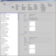

Java Application „FilterUI“
Content
- General
- Intention
- Licence
- Features
- Requirements
- Installation
- Start It
- Documentation
- Snapshots
- Download / Source
General
I've started development of a new java based application to access filter configuration data of any StarOffice or OpenOffice installation. The first version of it will be a very simple tool and supports read only access only. It's planned to extend it's functionality, step by step, to get a full-featured administration tool. But this task can't be done by one person only. So I offer the code on OpenOffice. Please feel free to contact me if you are interested in this code.
Intention
The filter configuration of an office is a very complex mechanism. Configuration data is organized similar to a database, e.g., filters are registered for different types. This data is available, inside an office installation, in a file named TypeDetection.xml. The structure of the file is simple, but the number of entries can be very high, e.g., on a full installation set. Reading and editing large sets isn't easy. That is the reason for this application: to provide a simple access to the data source and also illustrate the use of the office filter api.
Licence
It's completely free. Use of the binaries and source will not be regulated in any way. That doesn't include any external requirements, e.g., jdk / office, which may use their own license models.
Features
Version 1.0
remote connection to an already(!) running office
(doesn't include proxy support)read only view of all installed filters/types and their properties of remote office
query mode to specify which filter should be shown
locale of application is changeable during runtime
(prepared but not fully used)
Requirements
an OS which supports java and uses a windowing environment
(e.g. Linux with Gnome/KDE)JDK 1.2
Office installation
(StarOffice 6.0 [beta] or OpenOffice [641c])
For access of all known filters, it is necessary to make a full installation of office; otherwise, only a subset will be available. Furthermore, it is necessary to enable java support. The following JAR files will be used:
unoil.jar
ridl.jar
jurt.jar
juh.jar
sandbox.jar
Installation
There exist three possiblities:
Get the JAR file, for direct use.
Copy it into your office installation (this means your directory „<office_install>/program/classes“) or to any other directory which includes the required JAR files.
(see Requirements)Use sources from OpenOffice project framework/framework. Change to sub directory “java/filterui“. There you will find all necessary sources to build the application as a packed JAR file, as well as to generate the class and property files. See “java/filterui/readme.txt“ for further information. After compilation, you will have a JAR file. Use it in the same manner as described in 1.
Get the java sources and build it by yourself.
Of course, this is possible also – but I will not document it here. See 1 and 2 for more information on how to build from source, and use it for your own interests.
Start It
Start office with the following command line parameter to initiate remote mode:
„soffice -accept=socket,host=<HOST>,port=<PORT>;urp;“
Variable <HOST> describe the host on which office runs, e.g., „localhost“.
Variable <PORT> describe the port on which office listens for incoming requests.
These values must correspond to values set in the configuration file of the „FilterUI“ application named „filterui.ini“.Start application with the following command: „java -jar filterui.jar“
Documentation
It will come as soon as possible ...
Snapshots
| Main Window |  |
{kind=link}
Download/Source
|
Author |
Andreas Schlüns |
|
|
|
|
last modified |
25.01.2002 |